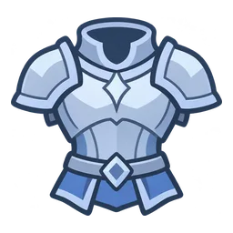
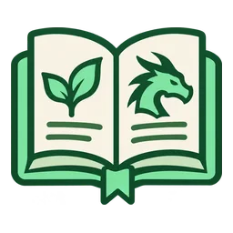

꼬마법사 키우기 v1.30의 게임 정보를 한 곳에서 확인하세요.
30종 원소·융합 마법

장비 이미지와 교환 재료
강화, 드랍, 젠, 카드 확률

몬스터, 보스, 포탈
온라인 협력 및 분배
성장 기록과 보상
확률표는 제공된 게임 클라이언트 소스에서 확인한 값입니다. 운영 서버에서 별도 처리하는 수치 및 실제 게임 화면과의 대조는 추가 확인 대상입니다.